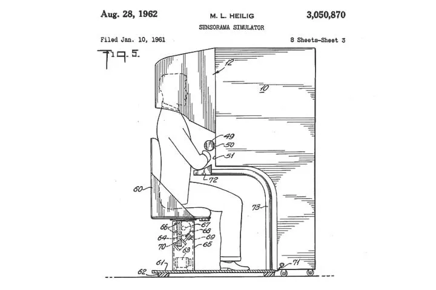
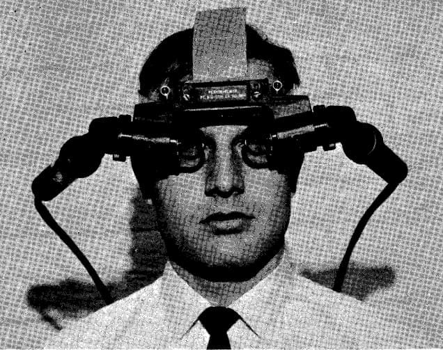
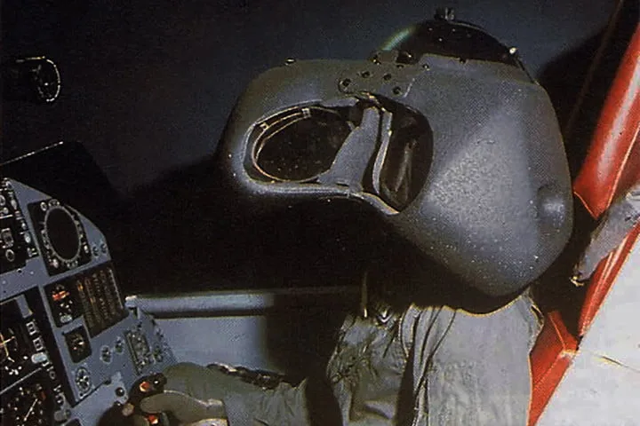
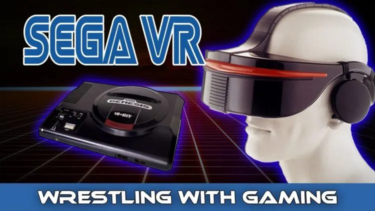
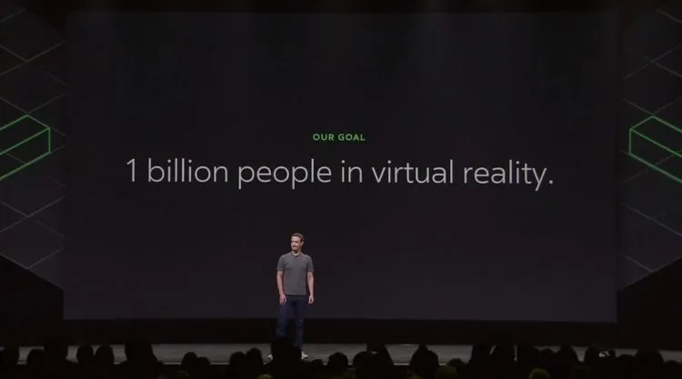

Depuis 2016, la réalité virtuelle est enfin accessible au grand public grâce à des casques comme l’Oculus Rift, le HTC Vive ou le PlayStation VR. Pour en arriver là, il aura fallu du temps. Revivez l’histoire de la VR à travers 7 étapes majeures de son développement.
L’idée de revêtir un casque pour s’évader du monde réel et s’aventurer vers des mondes imaginaires ne date pas d’hier. Par le passé toutefois, ce concept était cependant réservé aux œuvres de science-fiction. Depuis 2016, les casques VR sont enfin devenus réalité grâce à des entreprises comme HTC et Oculus. Tout un chacun peut désormais se plonger dans une réalité alternative sans bouger de son salon.
Ce que la plupart des gens ignorent, en revanche, c’est qu’il a fallu beaucoup de temps et de tentatives ratées pour parvenir à ce niveau d’aboutissement et de simplicité d’usage. Revivez l’évoulution de la réalité virtuelle à travers la frise chrnologique suivante représentant 7 étapes marquantes.
-
Le Sensorama est le premier concept de casque VR
En 1957, le cinéaste Morton Heilig invente une machine conçue pour immerger les utilisateurs dans un monde imaginaire. Son but est de permettre aux spectateurs de plonger dans les films en trompant leur sens, afin de donner une nouvelle envergure à l’expérience cinématographique. Il imagine le Sensorama comme une machine capable de simuler des odeurs, de produire du son en stéréo, des vibrations, et même des effets atmosphériques comme le vent dans les cheveux.
-
L’épée de Damoclès est le premier casque VR fonctionnel
Le premier casque VR fonctionnel a été créé en 1968 par Ivan Sutherland. Présenté comme « l’ultime écran », ce casque embarque un écran stéréoscopique permettant d’afficher des formes simples, changeant la perspective en fonction des mouvements de tête de l’utilisateur. L’écran n’étant pas occultant, ces formes sont superposées aux images du monde réel et cet appareil peut donc aussi être considéré comme le premier casque de réalité augmentée.
-
le Super Cockpit est le premier simulateur de vol VR
À la même époque que l’épée de Damoclès, l’ingénieur militaire Thomas Furness travaille sur un ambitieux projet de simulateur de vol immersif : le Super Cockpit. L’ingénieur continuera à travailler sur son projet jusque dans les années 80.
En résultera un cockpit d’entrainement capable de projet des cartes 3D générées par ordinateur, des images infrarouges et radar, et des données d’aviations en temps réel au sein d’un espace 3D. Selon ce créateur, ce projet a coûté plusieurs centaines de millions de dollars. Bien avant l’apparition des simulateurs de vol VR, ce projet permettait déjà aux pilotes de s’entraîner en utilisant des gestes, des paroles et même des mouvements oculaires.
-
Aspen Movie Map est l’ancêtre de Google Earth VR
Aspen Movie Map est un projet développé en 1978 par le MIT en collaboration avec la DARPA. En se basant sur des photographies capturées par des voitures à Aspen, dans le Colorado, le logiciel permettait à l’utilisateur de visiter la ville en vue à la première personne. Un principe que reprendra Google Earth VR, bien des années plus tard, en 2017.
-
L’histoire de la VR : 1991, le Sega VR est le premier casque VR dédié au gaming
C’est en 2010 que Palmer Luckey, alors âgé de 18 ans, crée le premier prototype de casque VR Oculus Rift. L’appareil offre un champ de vision de 90°, et parvient à lever 2,4 millions de dollars en 2012 sur Kickstarter.
-
Oculus amorce la démocratisation de la réalité virtuelle
Un an après le lancement de l’Oculus Rift et du HTC Vive, des centaines d’entreprises travaillent sur leurs propres casques de réalité virtuelle. Outre les géants comme Oculus, HTC, Samsung, Sony et Google, d’innombrables constructeurs chinois développent aussi leurs propres appareils low-cost..